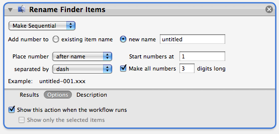
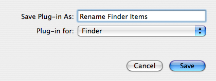
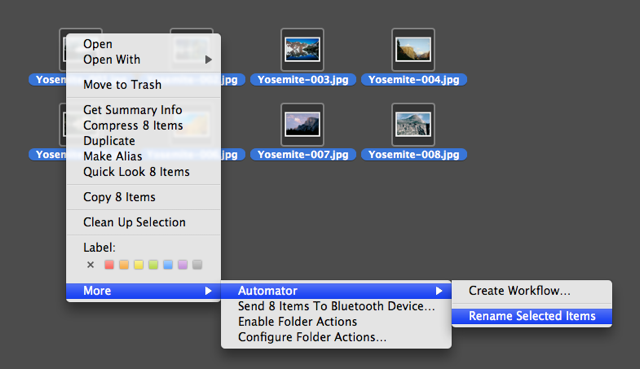
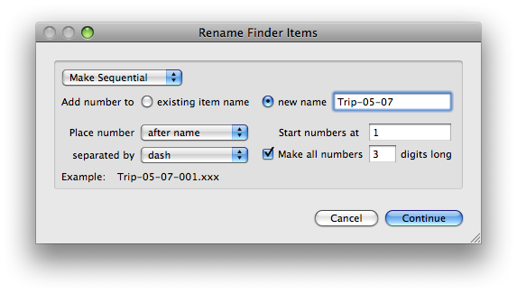
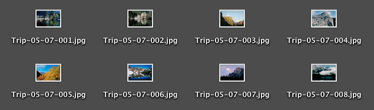

Tutorial 02: Save and Re-Use the Workflow
A powerful aspect of Automator is its ability to save workflows so that they can be used again and again. And since the process of renaming Finder items is something you're likly to do again, you can save this workflow and apply it to other selected Finder items in the future.
Currently, the workflow is designed to work only with the items you've already specified. To enable this workflow to work with other Finder items, you'll need to alter it slightly to make it more "generic" in its approach.
Delete the first and second actions from the workflow by clicking on the delete action button in their action title bars. The delete action button is the one with the "X" inside a circle located at the top right of each action view. Leave the Make Finder Item Names Sequential action as the only action in the workflow. Any items processed by the saved workflow will automatically be passed to it.
To allow the user of this workflow to edit the action parameters to suite their needs, the action view will need to be displayed when the workflow is run. Do accomplish this, click the Options button at the bottom left of the action view to display any special options related to the action. Click the Show Action When Run checkbox. This will cause this action's view to be displayed when the workflow is executed so that the user can set the parameters to meet the requirements for the selected Finder items.

Now you're ready to save the workflow. From Automator's File menu, choose Save As Plug-in... and from the forthcoming sheet in the Automator window, choose Finder from the Plug-in for popup menu to save the workflow as an extension to the Finder's contextual menu. Enter "Rename Finder Items" in the Save Plug-in As text input field and click the Save button.

You can now quit Automator and switch to the Finder desktop. Select the image files you previously renamed and then click on them with the Control key held down to summon the Finder contextual menu. In the Automator sub-menu you'll now see a menu item representing your saved workflow. Select Rename Finder Items from the menu to rename the selected items using the saved workflow.

Workflows saved as plug-ins or applications do not require the Automator application to run and instead will be executed by the system.
When a workflow is executed by the system, workflow status and controls are displayed at the top right of the main menu bar. The name of each action in the workflow is shown as it executes. Next to the name is a spinning progress indicator and next to the indicator is a red button that can be used to stop the workflow.
Once the workflow started, it will display the action view for the Rename Finder Items action in the center of the screen. Set the action parameters as shown and then click the Continue button.

The workflow will progress using the settings you input and rename each of the selected items on the desktop!

Congratulations, you've now used Automator to create a Finder renaming tool you can use at any time.